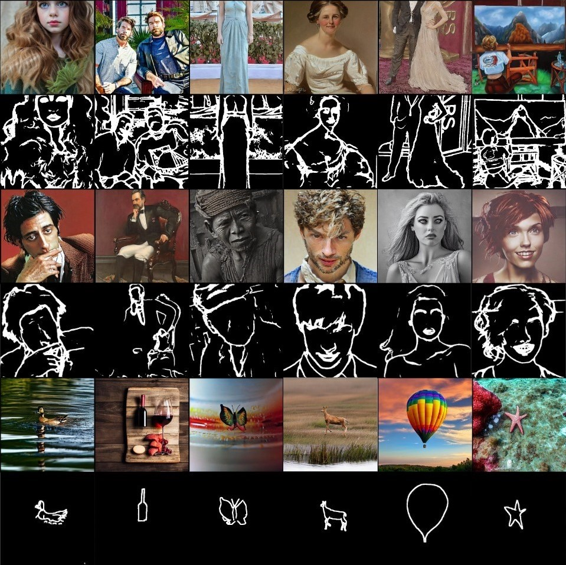
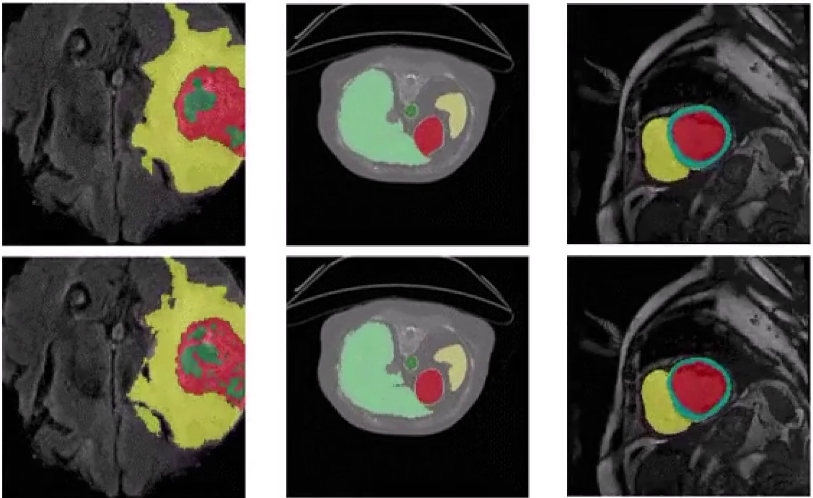

I’m on an exciting journey exploring the fascinating world of computer vision, deep learning, and generative AI. My work focuses on building and fine-tuning advanced AI models, then diving deep into explainable AI (XAI) to uncover why they succeed—or where they go wrong. I’m driven by the challenge of translating the magic of these black-box models into clear insights, from tracking down root causes of failure to discovering what makes them tick.

KnobGen: Controlling the Sophistication of Artwork in Sketch-Based Diffusion Models Pouyan Navard,
Amin Karimi Monsefi,
Mengxi Zhou,
Wei-Lun Chao,
Alper Yilmaz,
Rajiv Ramnath
CVPR 2025, CVEU project page
/
arXiv
We introduce KnobGen, a dual-pathway framework that bridges the gap between novice sketches and expert-level image generation.
Our system dynamically balances fine-grained detail and high-level control using adjustable modules, high-quality results from any sketch.

SegFormer3D: an Efficient Transformer for 3D Medical Image Segmentation
Shehan Pererra, Pouyan Navard, Alper Yilmaz
CVPR 2024,
DEF-AI-MIA project page /
CVF
SegFormer3D redefines 3D medical image segmentation with a lightweight hierarchical Transformer that rivals state-of-the-art models. By blending multi-scale volumetric attention with an all-MLP decoder, we achieve competitive accuracy while slashing parameter counts and compute needs.
{kind=link}